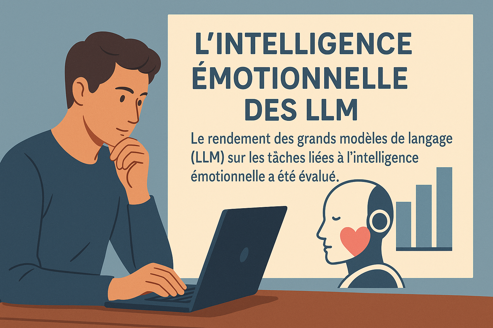

L’intelligence émotionnelle des intelligences artificielles : ChatGPT et cie surpassent les humains
Introduction
Peut-on vraiment enseigner à une intelligence artificielle à raisonner sur les émotions humaines? Cette question est au cœur d’une étude récente parue dans Communications Psychology (Schlegel et al., 2025), qui explore la capacité des grands modèles de langage (LLM) à réussir et à générer des tests d’intelligence émotionnelle. Les résultats sont saisissants : plusieurs LLM surpassent les humains sur cinq tests psychométriques reconnus, et parviennent à créer des versions alternatives presque équivalentes aux tests originaux.
Comprendre l’intelligence émotionnelle
L’intelligence émotionnelle par habileté (“ability EI”) désigne la capacité à percevoir, comprendre, réguler et exprimer les émotions de manière adaptée dans des situations concrètes. Cette conception repose sur l’idée que l’intelligence émotionnelle est une forme d’intelligence cognitive, mobilisée pour raisonner sur les émotions (les siennes ou celles d’autrui) et pour prendre des décisions sociales appropriées.
Elle inclut, par exemple, la capacité à détecter les signaux émotionnels dans un discours, à identifier la cause d’une émotion complexe, ou à choisir une stratégie de régulation adaptée dans un contexte professionnel. Elle se distingue des modèles de type traits (basés sur des auto-évaluations) par son approche fondée sur la performance et l’évaluation objective. Les personnes ayant une forte EI tendent à mieux s’adapter socialement, à coopérer plus efficacement et à résoudre les conflits de façon constructive. Cette étude s’intéresse à savoir si les LLM peuvent manifester cette forme de compétence, traditionnellement réservée aux humains.
La technologie mobilisée
Les chercheurs ont mis à l’épreuve six LLM : ChatGPT-4, ChatGPT-o1, Gemini 1.5 flash, Copilot 365, Claude 3.5 Haiku et DeepSeek V3. Ces modèles, entraînés sur de vastes corpus de texte, n’ont pas été explicitement programmés pour l’intelligence émotionnelle. Pourtant, ils montrent une capacité surprenante à raisonner sur les émotions, leur régulation, et leurs conséquences sociales.
Méthodologie de l’étude
L’étude comporte deux volets : (1) évaluer la performance des LLM sur cinq tests d’intelligence émotionnelle, et (2) générer de nouveaux items avec ChatGPT-4 et tester leur validité psychométrique. Les tests utilisés sont :
- STEM (gestion des émotions personnelles)
- STEU (compréhension des émotions)
- GEMOK-Blends (reconnaissance d’émotions mixtes)
- GECo Regulation (régulation des émotions en contexte professionnel)
- GECo Management (gestion des émotions chez autrui)
Dans le premier volet, chaque LLM a été invité à répondre aux tests selon les instructions originales destinées aux humains. Les chercheurs ont soumis les items dans des sessions séparées et répétées (10 fois par test et par modèle), en s’assurant que chaque modèle donne ses réponses sans biais contextuel. La proportion de bonnes réponses a ensuite été comparée à celle observée dans les échantillons de validation humaine, à l’aide de tests statistiques.
Dans le second volet, ChatGPT-4 a reçu l’instruction de créer des items inédits en se basant sur la structure des tests originaux. Ces items ont été ensuite administrés, de façon aléatoire et en double aveugle, à des participants humains recrutés via la plateforme Prolific (N total = 467). Les performances aux items générés ont été comparées aux performances sur les items originaux selon plusieurs indicateurs : difficulté, clarté, réalisme, diversité du contenu, fidélité interne et validité de construit.
Résultats principaux
Les LLM ont atteint une précision moyenne de 81 %, contre 56 % pour les humains, soit une différence statistiquement très significative avec des tailles d’effet dépassant d = 1 pour chaque test. Cela signifie que les modèles de langage ont non seulement surpassé les performances humaines moyennes, mais l’ont fait de manière constante sur l’ensemble des dimensions mesurées. Parmi eux, ChatGPT-o1 et DeepSeek V3 se distinguent avec des performances excédant deux écarts-types par rapport aux scores humains, illustrant une maîtrise remarquable des compétences émotionnelles mesurées.
Concernant la création d’items, les tests conçus par ChatGPT-4 ont présenté une difficulté comparable à celle des versions originales, confirmée par des tests d’équivalence (TOST). Ils ont été jugés légèrement plus clairs et plus réalistes par les participants, bien que l’effet soit petit (d < 0,20). En revanche, la diversité du contenu des situations émotionnelles proposées a été légèrement inférieure, les participants ayant regroupé les vignettes générées par ChatGPT en moins de catégories que celles des tests originaux.
La validité de construit (corrélations avec un test de vocabulaire et un autre test d’intelligence émotionnelle) et la fidélité interne (corrélations item-total moyennes) étaient globalement comparables entre les deux versions. Les différences observées restaient inférieures à un effet modéré (d < 0,50), et les versions originales et générées étaient fortement corrélées entre elles (r = 0,46), suggérant qu’elles mesurent les mêmes compétences fondamentales.
Portée et applications possibles
Ces résultats renforcent l’idée que les LLM peuvent jouer un rôle actif dans des interactions socialement sensibles, en particulier dans des contextes où la compréhension des émotions est essentielle pour soutenir la communication, la collaboration ou le bien-être.
- L’éducation : des agents pédagogiques intelligents pourraient adapter leurs rétroactions en fonction de l’état émotionnel de l’élève, identifier des signes de démotivation ou d’anxiété, et proposer un soutien à la fois cognitif et affectif.
- La santé mentale : les chatbots empathiques, capables d’identifier les états émotionnels de leurs interlocuteurs et de réagir de manière appropriée, pourraient offrir un soutien psychologique de première ligne, complémentaire aux professionnels.
- Le monde du travail : les LLM pourraient être intégrés à des outils RH pour la gestion des conflits, l’évaluation du climat émotionnel d’une équipe, ou encore pour offrir des conseils personnalisés sur la régulation du stress.
- La recherche en psychologie : les modèles pourraient être utilisés comme simulateurs pour tester des hypothèses théoriques sur les émotions ou pour générer des vignettes émotionnelles variées dans des protocoles expérimentaux.
En résumé, les LLM pourraient offrir une forme d’empathie cognitive, stable, systématique, et dénuée des fluctuations affectives qui influencent parfois les jugements humains. Leur capacité à traiter de l’information émotionnelle de manière constante pourrait représenter un atout majeur dans des contextes où la cohérence et la fiabilité sont cruciales.
Limites et perspectives
- Culture : les tests utilisés ainsi que les données d’entraînement des LLM sont principalement issus de contextes occidentaux, ce qui pose des questions sur la validité interculturelle des compétences mesurées ou simulées.
- Complexité des émotions : les vignettes standardisées ne reflètent que partiellement la variabilité, la subtilité ou l’ambiguïté des situations émotionnelles du quotidien, qui reposent souvent sur des nuances contextuelles.
- Transparence : les processus internes des LLM demeurent largement opaques. On ignore si les modèles raisonnent de manière psychologiquement plausible ou s’ils exploitent simplement des récurrences statistiques.
Des recherches futures devront explorer la capacité des LLM à s’adapter à des interactions dynamiques, à intégrer le contexte et l’historique de la relation, et à réagir à des émotions exprimées de manière implicite. Des travaux en psychologie culturelle et en intelligence artificielle explicable seront également essentiels pour évaluer les biais et limites des modèles dans des contextes humains variés.
Référence
Schlegel, K., Sommer, N. R., & Mortillaro, M. (2025). Large language models are proficient in solving and creating emotional intelligence tests. Communications Psychology, 3(80). https://doi.org/10.1038/s44271-025-00258-x